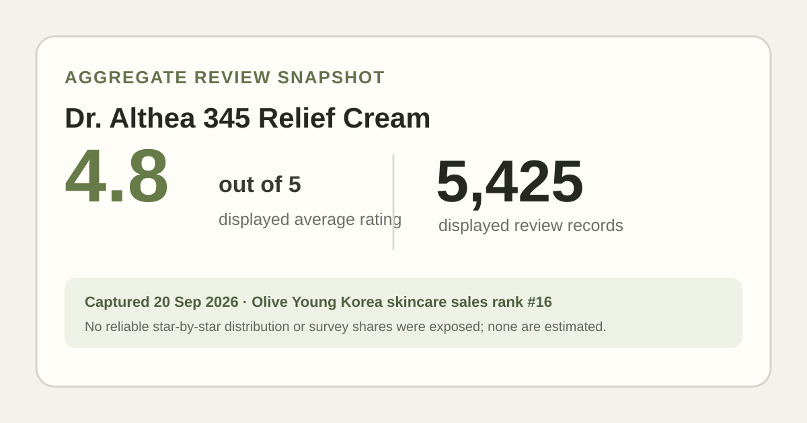
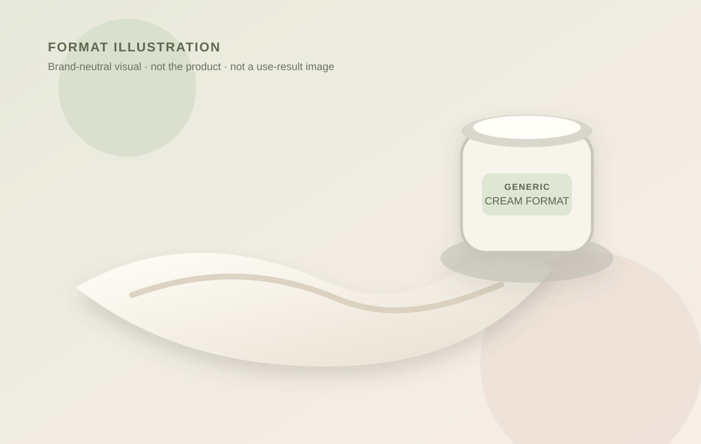

Data captured September 20, 2026. This is an independent analysis of retailer-displayed aggregate data. I did not test the cream, and no individual review, reviewer name, or user photo is copied or translated.

The short version: Dr. Althea 345 Relief Cream held skincare sales rank 16 in the captured retailer list. Its product header and review tab both showed 4.8 out of 5 from 5,425 review records. That is useful popularity and satisfaction context, but not evidence that the cream will calm, repair, or treat a particular person's skin.
The count is large enough to be more informative than a handful of ratings, yet scale does not remove the ordinary weaknesses of storefront data. The page does not independently prove that every record came from a verified purchase, that the same formulation or promotional set applied to every record, or that people used the product in the same routine. The 4.8 average is therefore best read as a broad retail-audience signal.
Averages compress different rating patterns into one number. Normally, a displayed five-to-one-star distribution helps show whether an average comes from a tight cluster or a mix of enthusiastic and disappointed ratings. In this capture, however, the star-by-star shares were not reliably exposed in the accessible product view. I have not reverse-engineered them from the average, borrowed them from an older snapshot, or treated a third-party estimate as the retailer's current data.
Ranking position is especially easy to overread. A sales list can be shaped by stock, discounts, gifts, advertising, seasonality, and a newly featured celebrity campaign. Rank 16 says the listing was selling strongly relative to the other skincare items on that page at that moment. It does not make rank 17 less effective or prove that this cream caused the experiences implied by its marketing name.
This listing may deserve a closer look if you are already comparing straightforward cream formats, value a large review base, and can verify the current regional ingredient list before purchase. The product format suggests the richer, final moisturizing step that many people use after lighter layers, but that is a general description of creams—not an observation from using this one. Climate, how much you apply, sunscreen and makeup layers, and the rest of your routine can all change how any cream feels.
It may be a poor research match if you need evidence for a diagnosed skin condition, want a quantified sensitive-skin survey, or need an exact finish description. Those fields were not available reliably enough in this capture. A high rating should not replace checking known allergens, fragrance preferences, the current package directions, or professional guidance where a medical concern is involved.

The captured page showed ₩21,500 for a promotional 50 ml set with two 10 ml extras, versus a ₩29,000 reference price. That is a dated Korea-store anchor, not a stable global price. Compare the checkout total per usable milliliter only after confirming whether another seller includes the same extras, whether shipping or import tax applies, and whether the regional formula is the one you intended to buy.
Gifts can make a bundle feel unusually generous while also making comparison harder. Treat the accessory as zero skincare volume, and do not assume the extra minis will always be included. If the set disappears, the conclusion here should not be “wait for this exact deal”; it should be “recalculate using the pack that is actually available.”
Yes in the narrow retail-aggregate sense: the captured page displayed 4.8 out of 5 across 5,425 records. That does not promise the same experience for an individual user.
The capture did not reliably expose a skin-type or gentleness survey. A product name, high average, or top-selling position cannot substitute for checking the current label and your own sensitivity history.
This analysis makes no treatment claim. Retail ratings are not clinical evidence, and “relief” in a cosmetic name should not be read as proof of treating acne, dermatitis, inflammation, or another condition.
The captured promo was competitively structured as 70 ml total cream volume if all listed cream extras were included. Value still depends on current configuration, shipping, taxes, and whether the formula fits your routine. The aggregate rating cannot answer those personal constraints.
Dr. Althea 345 Relief Cream has a strong, sizeable storefront signal: 4.8 stars from 5,425 displayed review records, plus a current rank-16 appearance in Olive Young Korea's skincare sales list. That is enough to justify a conditional shortlist. It is not enough to claim a star distribution, sensitive-skin fit, particular texture, ingredient dose, or medical result. Verify the current label and pack, compare the live total cost, and let the missing data stay missing.
← All K-Beauty Data Desk reviews · Best-seller rankings · Skin-poll representation · About & methodology
Check the dated source product page.
Published by The K-Beauty Data Desk · Aggregate data captured 2026-09-20. No individual review text, name, or photo is reproduced or translated. I did not test the product and received no product or payment for this coverage.